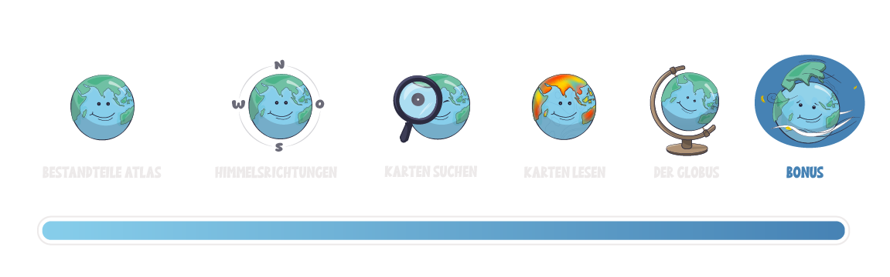

Bonus: Navigationstechniken
Mit einem Kompass die Himmelsrichtungen bestimmen ist einfach. Sicherlich hast du aber nicht zu jeder Zeit einen Kompass in deiner Tasche dabei, oder? Es gibt trotzdem viele Möglichkeiten, wie du dich in deiner Umgebung orientieren kannst.
Und zum Schluss ist es Zeit für Action!Hast du schon einmal von der App Actionbound gehört? Das ist eine kostenlose App, mit der du spannende digitale Schnitzeljagden spielen kannst. Du kannst sie sogar selbst erstellen. Eine Schnitzeljagd heißt in der App "Bound" und führt dich quer durch deine Umgebung. Dabei musst du viele Rätsel lösen und entdeckst Orte, die du vielleicht noch nie gesehen hast. Geographie also ganz praktisch! Wenn du den QR-Code scannst, findest du einen Bound, der dir zeigt, wie du selbst eine Schnitzeljagd erstellen kannst! Viel Spaß. 😊 |
👩🏫 Hinweis für Lehrkräfte
Hinweis für Lehrkräfte:
Ein Actionbound eignet sich auch hervorragend für Exkursionen an. Sie können dabei auf bereits bestehende ortsunabhängige Bounds zurückgreifen oder einen eigenen entwickeln. Die Methoden und Einsatzszenarien sind vielfältig! Gerne unterstützen wir Sie dabei. Schulleitungen können eine Schullizenz über den Bildungsserver-Support beantragen (support@bildung-lsa.), Lehrkräfte können sich jedoch auch für eine Einzellizenz selbst registrieren. Beide Arten sind für Sie kostenfrei! Weitere Informationen finden Sie auf dem Bildungsserver unter Externe Dienste.
